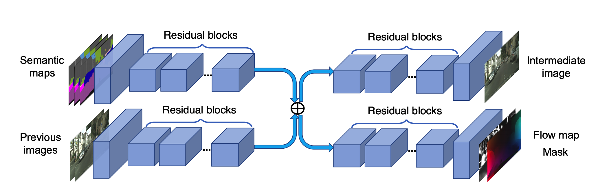
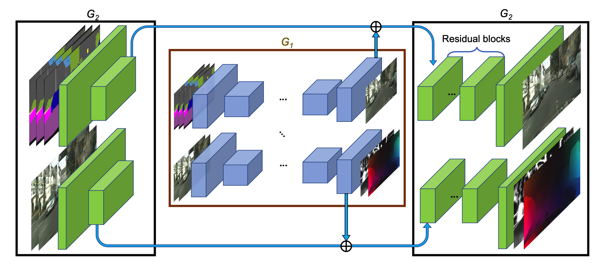
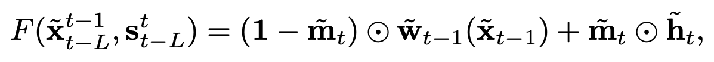
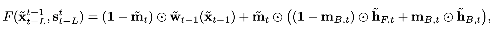
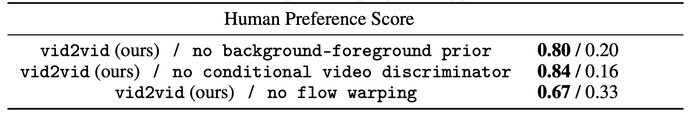
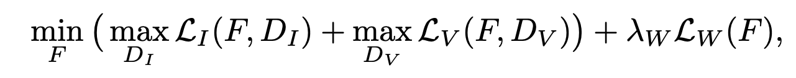
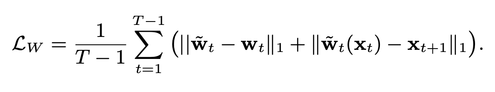

Novelty Overview
Builds on top of pix2pixHD architecture, extends high resolution image generation to videos. Adds additional contrainsts to account for temporal consistency across frames using optical flow.
Challenges
- Previous methods produced low resolution, temporally incoherent videos
- Generating at 2K scale
- Smoothness in the generated video, artifacts in the generates frames
Method
- Sequential Generator - Takes in previous 2 frames, semantic maps, generates op frame
- Flow Warping - Using optical flow to warp pixels from previous frame to current frame
- Background-Foreground Prior - Separating foreground, background in the frame generation process
- Multi-scale Image Discriminator - To ensure scene consistency at all levels (op/4, op/2, op)
- Multi-scale Video Discriminator - To ensure long term and short term consistency among frames
- Improved Adversarial Loss - Adds feature matching loss, flow estimation loss
Sequential Generator
- During training, model takes in previous 2 frames, semantic segmentation maps and generates a final frame via an intermediate image, optical flow estimate

Generator Block, G1

Overall Generator Network
Flow Warping
- Assumption is most information among consecutive frames is redundant
- Can use most information from previous frame if optical flow estimate is known
- Hence can map, 'warp' them to current frame
- Handle rest occluded areas, new content from intermediate image, blend to form final output frame
- Learn occlusion mask (mt) for blending

Generating final frame (F)
Background-Foreground Prior
- Modelling foreground and background separately was found to produce better results than together
- Foreground included semantic areas like Trees, Roads and Background included Cars, Pedestrians etc.
- Background reconstructed by using optical flow from previous frame, only occluded areas are synthesized
- Foreground objects change a lot, can't rely on previous frame/ optical flow, areas need to be synthesized afresh
- 'mb' denotes background mask extracted from GT semantic segmentation mask

Ablation Study

Multi-scale Image Discriminator
- Same as pix2pixHD 3 Discriminators, operate on op, op/2, op/4 resolution
- 70x70 Patch GAN Architecture
Multi-scale Video Discriminator
- Is Multi-scale as Image Discriminator
- Adds the long term and short term video coherence part, ensures given the same optical flow the Generator output and GT frames are similar, transition is smooth
- Does this in a convoluted way by random sampling window of K consecutive frames, conditions discriminator on the flow
Improved Adversarial Loss
- Builds on traditional GAN objective, adds flow estimation loss, feature matching loss

Improved Adversarial Loss

Results

Demo